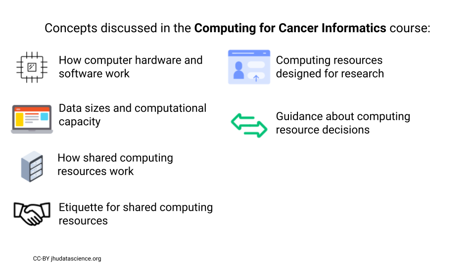
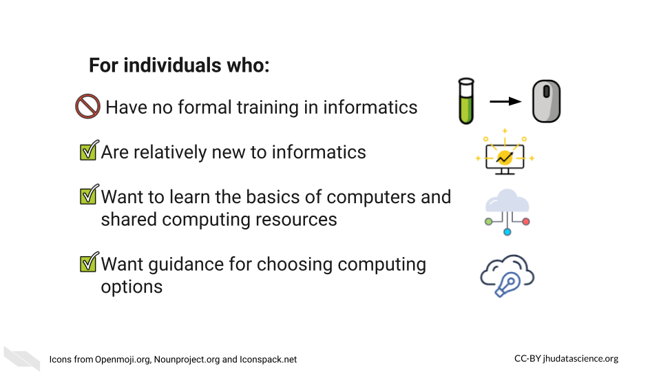
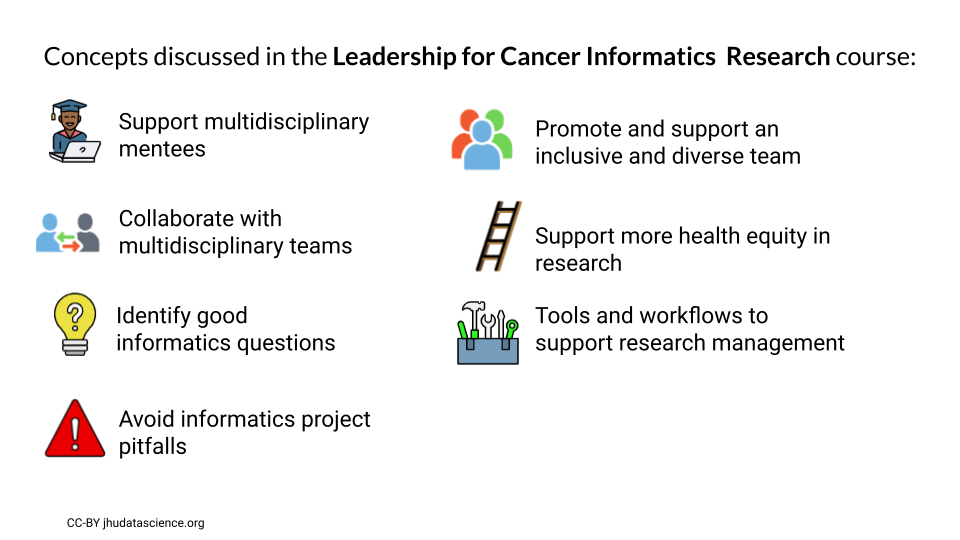
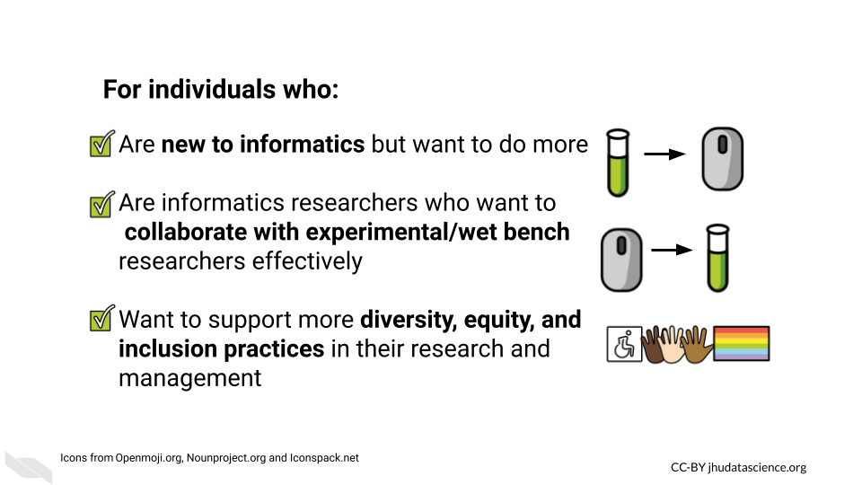

Teaching
Instruction
2022 Short Course Instructor University of Washington Biostatistics Summer Institutes, Virtual, “Data Wrangling” (49 students)
2022 Course Instructor - rated as excellent by students 140.604.79 – Introduction to R for Public Health Researchers, Virtual, Johns Hopkins Bloomberg School of Public Health Summer Institutes Term (41 students)
2022 Course Co-creator & Instructor - not rated PH.140.840 – Baltimore Community Data Science, Virtual, Johns Hopkins Bloomberg School of Public Health Summer Institutes Term (11 students)
2022 Course Instructor - rated as excellent by students 140.604.73 – Introduction to R for Public Health Researchers, Virtual, Johns Hopkins Bloomberg School of Public Health Winter Institutes Term (32 students)
2021 Short Course Instructor University of Washington Biostatistics Summer Institutes, Virtual, “Data Wrangling” (approx 45 students)
2021 Course Co-developer and Instructor 140.604.11 – Introduction to R for Public Health Researchers, Virtual, Johns Hopkins Bloomberg School of Public Health Summer Institutes Term (34 students)
2020 Workshop Instructor R-Ladies Baltimore, Virtual “Wrangling a pdf with stringr” (approx 40 attendees)
2020 Workshop Instructor Johns Hopkins Center for Talented Youth, Baltimore, MD “Research and Data Science” Designed and taught a workshop about Research and R programming to South Korean high school students in Baltimore (approx 12 students)
2019 Course Instructor Johns Hopkins Center for Talented Youth, Baltimore, MD “Introduction to Biomedical Sciences” Designed and taught a full time two week course about Biomedical Sciences to high school students in Abu Dhabi and Ajman in the United Arab Emirates (approx 15 students each)
2018 Teaching Assistant Baltimore Underground Science Space, Baltimore, MD “R you interested in big data analysis?” Assisted with R programming analysis one-on-one with students
2018 Teaching Assistant Baltimore Underground Science Space, Baltimore, MD “Go with your guts! (And the billions of bacteria in them): A personal microbiome course” Assisted with R programming analysis one-on-one with students
2017 Workshop Instructor Baltimore Underground Science Space, Baltimore, MD “Adventures in BIG DATA Analysis” Designed and taught a course on data analysis using R to approximately 20 students
2013 Teaching Assistant Department of Neurosciences, University of New Mexico, Albuquerque, NM “Introduction to Neurobiology”, Biomed 509 taught by Donald Partridge, Ph.D. Assisted with grading, class organization, and discussions
2007 Student Tutor Department of Chemistry, University of New Mexico, Albuquerque, NM “Organic Chemistry”, Chem 301 taught by Lisa Whalen, Ph.D. Tutored two undergraduate students
2005 Class Instructor Explora Science Center, Albuquerque, NM Taught a variety of science courses to children age 3-12
Case Studies
- Exploring
global patterns of obesity across rural and urban regions (Version
v1.0.0).
Wright, Carrie and Jager, Leah and Taub, Margaret and Hicks, Stephanie. (2020).
https://github.com/opencasestudies/ocs-bp-rural-and-urban-obesity

- Predicting
Annual Air Pollution (Version v1.0.0).
Wright, Carrie and Jager, Leah and Taub, Margaret and Hicks, Stephanie. (2020).
https://github.com//opencasestudies/ocs-bp-air-pollution

- Vaping
Behaviors in American Youth (Version v1.0.0).
Wright, Carrie and Ontiveros, Michael and Jager, Leah and Taub, Margaret and Hicks, Stephanie.(2020).
https://github.com/opencasestudies/ocs-bp-vaping-case-study

- Opioids
in the United States (Version v1.0.0).
Wright, Carrie and Wang, Kexin and Jager, Leah and Taub, Margaret and Hicks, Stephanie. (2020).
https://github.com/opencasestudies/ocs-bp-opioid-rural-urban

- Influence of
Multicollinearity on Measured Impact of Right-to-Carry Gun Laws Part 1
(Version v1.0.0).
Wright, Carrie and Ontiveros, Michael and Jager, Leah and Taub, Margaret and Hicks, Stephanie.(2020).
https://github.com/opencasestudies/ocs-bp-RTC-wrangling

- Influence of
Multicollinearity on Measured Impact of Right-to-Carry Gun Laws (Version
v1.0.0)
Wright, Carrie and Ontiveros, Michael and Jager, Leah and Taub, Margaret and Hicks, Stephanie.(2020).
https://github.com//opencasestudies/ocs-bp-RTC-analysis

- Disparities
in Youth Disconnection
Wright, Carrie and Ontiveros, Michael and Jager, Leah and Taub, Margaret and Hicks, Stephanie. (2020).
https://github.com/opencasestudies/ocs-youth-disconnection-case-study

- Mental
Health of American Youth
Wright, Carrie and Ontiveros, Michael and Jager, Leah and Taub, Margaret and Hicks, Stephanie. (2020).
https://github.com/opencasestudies/ocs-bp-youth-mental-health

- School
Shootings in the United States (Version v1.0.0).
Wright, Carrie and Ontiveros, Michael and Jager, Leah and Taub, Margaret and Hicks, Stephanie.(2020).
https://github.com//opencasestudies/ocs-bp-school-shootings-dashboard

- Exploring
CO2 emissions across time (Version v1.0.0).
Wright, Carrie and Ontiveros, Michael and Jager, Leah and Taub, Margaret and Hicks, Stephanie.(2020).
(https://github.com/opencasestudies/ocs-bp-co2-emissions)

- Exploring
global patterns of dietary behaviors associated with health risk
(Version v1.0.0).
Wright, Carrie and Jager, Leah and Taub, Margaret and Hicks, Stephanie. (2020).
https://github.com/opencasestudies/ocs-bp-diet

Books
2022 An Educator’s Guide to the Open Case Studies, Carrie Wright, Michael Breshock, Lyla Atta, and Stephanie Hicks. https://leanpub.com/opencasestudies_guide

2020 Tidyverse Skills for Data Science in R, Carrie Wright, Shannon Ellis, Stephanie Hicks, and Roger D. Peng. https://leanpub.com/tidyverseskillsdatascience

Book image created by Jessica Crowell
Online Courses
2022 - Computing for Cancer Informatics on Coursera and Leanpub


2021 - Leadership for Cancer Informatics Research on Coursera and Leanpub

 2020 - Tidyverse Skills for Data Science in R Specialization, Carrie Wright, Shannon Ellis, Stephanie Hicks, and Roger D. Peng.

Including:
- Introduction
to the Tidyverse
 2. Importing
Data in the Tidyverse
2. Importing
Data in the Tidyverse
 3. Wrangling
Data in the Tidyverse
3. Wrangling
Data in the Tidyverse
 4. Visualizing
Data in the Tidyverse
4. Visualizing
Data in the Tidyverse
 5. Modeling
Data in the Tidyverse
5. Modeling
Data in the Tidyverse

Course images created by Jessica Crowell
Mentorship
Academic Advisees
Capstone Advisor for Logan, Eean. Master of Public Health. Johns Hopkins Bloomber School of Public Health, Baltimore, MD (2022).
Thesis Advisor for Breshock, Michael. Master of Science in Engineering, Biomedical Engineering. Johns Hopkins University, Baltimore, MD (2020 - 2021).Thesis Link.
Research Advisees
Hwang, Jimin. Graduate Research Assistant. Master of Public Health. Johns Hopkins University, Baltimore, MD (2022). Worked with Jimin to create scientific communication cartoons.
Rout, Pratik. Graduate Research Assistant. Master of Science, Bioinformatics. Johns Hopkins University, Baltimore, MD (2022). Mentored Pratik to create interactive tables for ITCR tools.
Atta, Lyla. Graduate Research Assistant. Doctor of Philosophy, Biomedical Engineering. Johns Hopkins University, Baltimore, MD (2021 - 2022). Mentored Lyla as we created a guide for instruction with our case studies.
Breshock, Michael. Research Assistant. (Not in a degree program at the time - just graduated with Master of Science in Engineering degree), Department of Biostatistics. Johns Hopkins Bloomberg School of Public Health, Baltimore, MD (2021 - 2022). Mentored Michael to create OCSdata R package and to create other case study tools and resources, as well as perform research on case study usage.
Meng, Qier. Graduate Research Assistant. Master of Science, Biostatistics. Johns Hopkins Bloomberg School of Public Health, Baltimore, MD (2020 - 2021). Mentored Qier, as she made case studies interactive.
Ontiveros, Michael. Graduate Research Assistant. Master of Health Sciences, Epidemiology. Johns Hopkins Bloomberg School of Public Health, Baltimore, MD (2020). Worked with Michael to create case studies.
Rajpurohit, Nina. Research Associate. Lieber Institute for Brain Development, Baltimore, MD (2017). Trained and guided Nina through a gene expression research project.
Brusilovsky, Jane. Undergraduate Student Researcher. Bachelors of Science, Bioengineering. Lieber Institute for Brain Development, Baltimore, MD (2017). Trained and guided Jane through a gene expression research project.
Astorga, Daniel. Undergraduate Student Researcher. Bachelors of Science, Biology. The Mind Research Network, Albuquerque, NM (2013). Trained and guided Daniel through an imaging genetics research project.
Thesis Committees/Thesis Reader
Breshock, Michael. Master of Science in Engineering. Biomedical Engineering, Johns Hopkins Whiting School of Engineering, Baltimore, MD. Thesis entitled “Expanding Access and Removing Barriers: Data Science Education with the Open Case Studies Digital Platform” (2020-2021).
Michael Patrick Geaghan. International Doctoral Thesis Examiner. Thesis entitled “Characterising Transcriptional Perturbations Arising from Altered Expression of Schizophrenia-Associated MicroRNA” for the School of Biomedical Sciences and Pharmacy, University of Newcastle, Australia (2019).